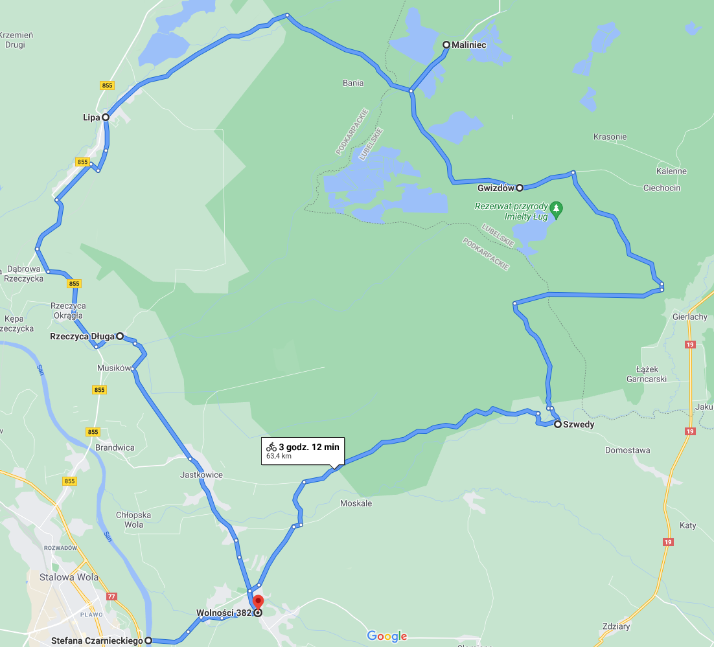
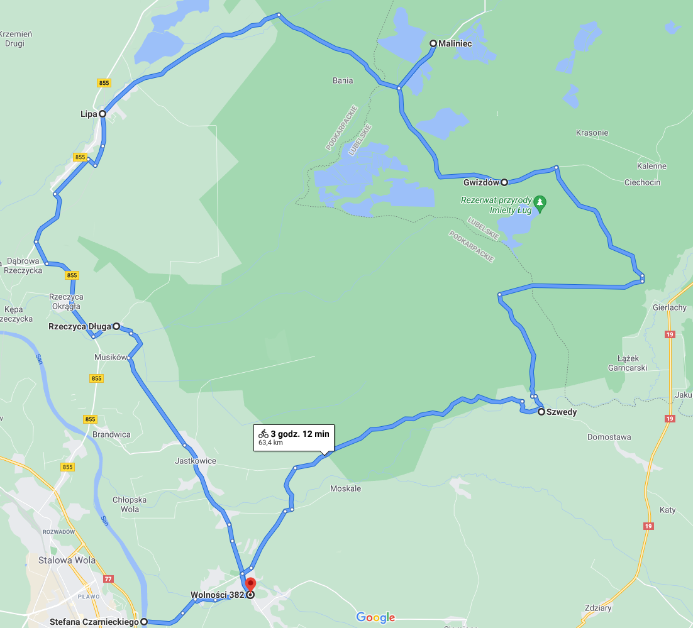

Wycieczka rowerowa szlakami green velo
Szlak rowerowy jest poprowadzony przez piękne łonia nautury podążając tym szlakiem ujżysz piękne jeziora oraz zielone lasy
Szlak rozpoczyna się w stalowej woli prowadzi przez Pysznice następnie kierujemy się na rzeczyce Długą potem na Lipe po drodze można ujrzeć piękną naturę. Następnie szlak prowadzi nas na Maliniec. Następnie trasa prowadzi nas przez Gwizdów oraz Szwedy a nasza trasy kończy się w Pysznicy.

Szlak rozpoczyna się w stalowej woli prowadzi przez Pysznice następnie kierujemy się na rzeczyce Długą potem na Lipe po drodze można ujrzeć piękną naturę. Następnie szlak prowadzi nas na Maliniec. Następnie trasa prowadzi nas przez Gwizdów oraz Szwedy a nasza trasy kończy się w Pysznicy. 